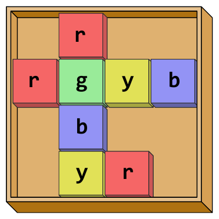
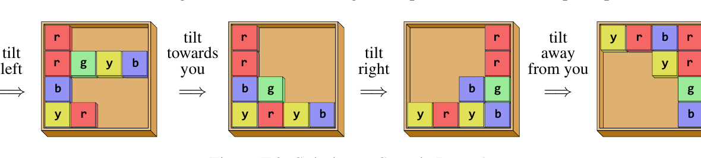

47th ICPC World Championship · Problem F
You found a weird puzzle in a box with old toys in your attic. The puzzle forms a rectangular grid board made of h × w square cells. Some cells in that grid have a colored tile placed on them, as shown in Figure F.1.

You are not yet sure what the exact goal of this puzzle is, but you started examining possible ways of rearranging the tiles. Their arrangement can be manipulated by tilting the grid in one of the four cardinal directions: to your left, to your right, towards you, or away from you. Tilting causes all the tiles to slide in the respective direction until they are blocked either by the boundary or by another tile. Given a starting and ending arrangement, determine whether there exists some sequence of tilts that transforms the former into the latter. Figure F.2 illustrates tilting of the puzzle shown in Sample Input 1.

The first line of input contains two integers h and w (1 ≤ h, w ≤ 500) representing the height and width of the grid. Then follow h lines giving the starting arrangement from the top row to the bottom row. Each of these lines contains a string of length w describing cells on the row from left to right. If a cell is empty, the corresponding character is a dot (.). If there is a tile, the color of that tile is given, denoted by a lowercase letter (a-z). Different letters represent different colors, and tiles of the same color cannot be distinguished.
After the starting arrangement, there is one empty line and then follows a description of the ending arrangement, consisting of h lines in the same format as for the starting arrangement.
Output yes if a sequence of tilts exists that transforms the starting arrangement to the ending arrangement, and no otherwise.
4 4 .r.. rgyb .b.. .yr. yrbr ..yr ...g ...b
yes
1 7 ....x.. ..x....
no
4 3 yr. ..b ry. b.. ... ..b .ry byb
no